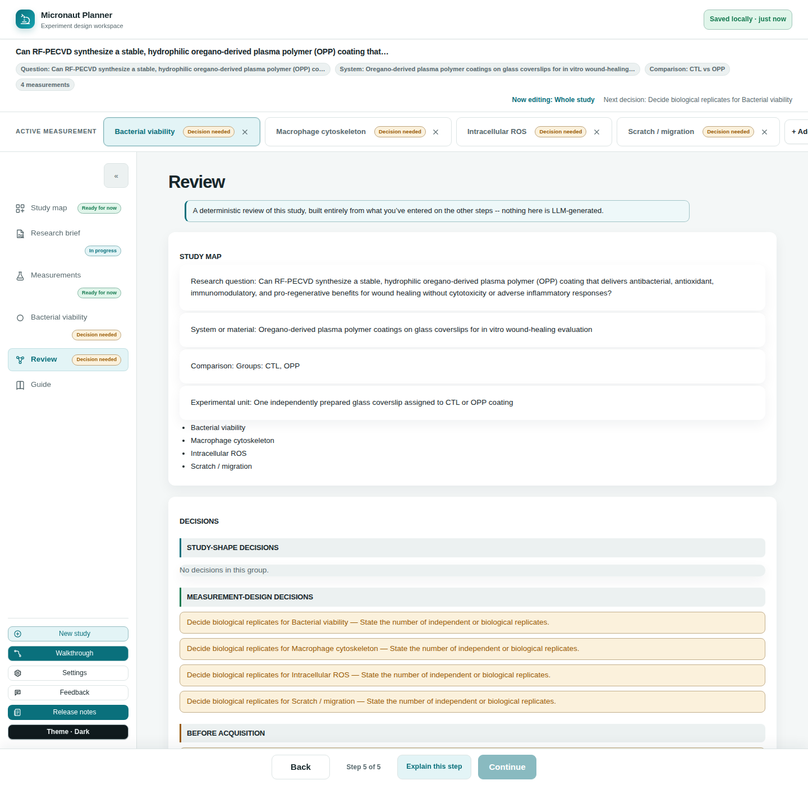

Chapter 9
Review & Exports
The Review step reads every other step and turns it into one page: a diagram of the whole study, a plain readiness verdict, and every file Micronaut can hand you when the plan is done.
What you'll be able to do
- Read the study map, decisions list, and diagram on the Review step
- Understand the "Planner checks" readiness verdict and what it does (and doesn't) validate
- Download each export Micronaut offers, and know which format fits which purpose
- Understand what happens when you try to export a study that still needs review
- Copy a ready-made prompt for pasting into your own LLM, and know exactly what it does and doesn't do
What Review is
Review is the last step in the nav, and deliberately a read-only one: it enters nothing new into your study. Everything on the page is assembled live from whatever you've already answered on Study map, Research brief, and each measurement's Samples & design, Acquisition, and Data plan. Its own explainer puts it plainly: "a deterministic review of this study, built entirely from what you've entered on the other steps — nothing here is LLM-generated."

Study map summary and decisions
At the top of Review, a short text summary restates your study's shape: the research question, the system or material, the comparison (groups, or "observational"), and the experimental unit, followed by a list of every measurement with its readout.
Below that, a Decisions section groups everything Micronaut thinks still needs a human decision into four tiers: Study-shape decisions, Measurement-design decisions, Before acquisition, and Can be assigned later. Each item names the workspace it belongs to — click it and Review switches you straight to the measurement (and step) that owns it, so you never have to hunt for where a flagged decision actually lives.
The study diagram
A Study diagram section draws the study as a small branching chart — the study itself fanning out to each measurement, and each measurement's readout, modality, design, controls, and planned filenames. It's a self-drawn inline diagram (no external diagramming library), so it works with zero network access exactly like the rest of the app, and it scrolls horizontally on its own if a study with many measurements makes it wide.
Planner checks: the readiness verdict
The Planner checks section gives one verdict for the whole study, composed from every validator the app already runs elsewhere (naming format checks, design/condition issues, spectral-overlap flags, path-length warnings, and unanswered required fields):
- All planner checks complete — nothing outstanding.
- Needs review: N incomplete or provisional item(s) remain — nothing blocking, but some fields are still placeholders or warnings worth a look.
- Blocked: N issue(s) need correction before final export — at least one real error (an invalid naming value, for instance) exists somewhere in the study.
Directly under the verdict, a standing disclaimer keeps the scope honest: "Planner checks do not validate scientific validity, statistical power, ethics approval, biosafety, or instrument suitability." A clean verdict means Micronaut's own checks passed — nothing more.
🔍 Why it works this way. This is the same conformance engine that flags naming errors on Data plan and design issues on Samples & design — Review doesn't run a second, separate opinion, it just collects the one verdict in one place.
Each measurement, expanded
Below the study-wide sections, every measurement gets its own collapsible entry: its readout, modality, specimen (when set), design summary, any design issues, its controls (grouped as panel-derived and readout-specific — an empty controls list is always labelled, never silently blank), any study-specific notes for its current stage, and its full list of planned filenames. A Download bench card (.md) button sits on each measurement's own entry — see Exports below.
A "How to run this study" section further down shows the same fixed five-stage execution ladder for every study (idea → pilot → validate controls → fix acquisition settings → advanced modality), with any measurement-specific notes attached to the relevant stage.
Exports
An Export study menu offers four downloadable files, all built from the exact same study document the rest of the Review page reads — so an exported figure can never disagree with what's on screen:
| Export | What it is |
|---|---|
| Markdown (.md) | The full study write-up as plain-text Markdown — readout, design, controls, filenames, and the ladder, for every measurement. |
| Study map (.svg) | The study diagram above, saved as a standalone, openable SVG image. |
| File manifest (.csv) | One row per planned filename, with its group, factors, and replicate numbers — the spreadsheet-ready version of the planned-name lists. |
| Study data (.json) | A full raw-data dump of the study document used to build everything else on this page. |
Two more actions sit alongside the export menu:
- Copy prompt for your own LLM — copies an instruction preamble, ground rules that keep a model from inventing a marker or setting, your study as JSON, and the decisions Micronaut can tell haven't been made yet, all in one block. Paste it into whatever LLM you already use; nothing is sent from the app itself, and nothing the model replies is read back into your study automatically — you read the reply and act on it yourself.
- Print / Save as PDF — opens your browser's own print dialog over this page, which any browser can save as a PDF.
Bench cards
A per-measurement Download bench card (.md) button (on each measurement's own entry above) produces a separate, compact, print-oriented single-measurement summary: channels, controls with their reasons, and two worked filename examples — meant to sit next to you at the bench, not the whole study document.
💡 Tip. The bench-schedule (.ics) calendar file is a different export, generated on each measurement's Data plan section from your own timing answers, not from Review. See Validation & Naming for the naming/data-plan page, and this measurement's Data plan section for the Download schedule button itself.
What happens when a study still needs review
Every download button above (except Copy prompt for your own LLM) re-checks the study's readiness at the moment you click it, not when the page first loaded — so an export can never silently use a stale snapshot from before your last edit:
- Blocked — the export is refused outright, with a toast telling you how many blocking issues need correcting first.
- Needs review — a confirmation dialog lists a few example items and asks whether to export anyway. Confirming proceeds; cancelling stops the export so you can go fix what's listed.
- Ready — the download happens immediately, no dialog.
⚠️ Careful. This gate applies to Markdown, SVG, CSV, JSON, bench cards, and Print/Save as PDF — but not to Copy prompt for your own LLM, which always copies your study as-is so the model can see the real state, unfinished decisions included.
Check yourself
A measurement's readiness shows "Needs review." Can you still export a Markdown file?
Yes — a confirmation dialog lists example issues and lets you export anyway. Only "Blocked" (a real error, not just an incomplete field) refuses the export outright.
Does a clean "All planner checks complete" verdict mean your experiment design is scientifically sound?
No. Review's own disclaimer says planner checks don't validate scientific validity, statistical power, ethics approval, biosafety, or instrument suitability — only that Micronaut's own naming/design/panel checks came back clean.
You paste the "Copy prompt for your own LLM" text into a chatbot and it answers. Does that answer get written into your study automatically?
No. It's a one-way handoff — you read the model's reply and decide yourself whether and how to act on it; nothing it says is read back into Micronaut.